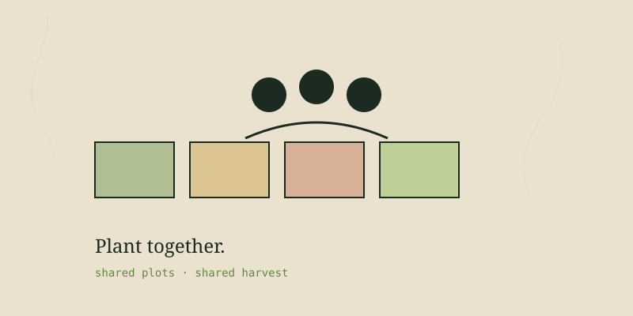

A community garden is one of the highest-leverage things a neighborhood can build. It turns unused land into food, connects neighbors who'd otherwise never meet, teaches skills, and makes a place more resilient. I'm a big believer in them — it's why I built a whole hub on this site for people starting one. Here's the practical playbook, drawn from how successful gardens actually come together.
Start with people, not land
The most common mistake is finding a plot first and hoping people show up. Do it backwards: gather a core group of committed neighbors first. A garden lives or dies on its people. You want at least a handful of reliable folks who'll show up to build, plant, weed, and organize — not just sign up and disappear. Hold a first meeting, gauge real interest, and find your two or three co-leaders.
Build the core group
Find 5–10 genuinely committed people. Hold a kickoff meeting. Identify leaders who'll carry it.
Find and secure land
Look for vacant lots, church or school grounds, park edges, unused city land. Get written permission or a lease — a handshake isn't enough.
Test the site
Sun (6+ hours), water access, and soil safety. Test for contaminants if it's an old urban lot; use raised beds if in doubt.
Plan the layout
Individual plots, shared areas, paths, water, storage, a gathering spot. Decide plot sizes and how many.
Set the rules
Membership, fees (to cover water and supplies), responsibilities, what happens to neglected plots, conflict resolution.
Build it
Organize work days. Build beds, run water, set up a shed. Many hands make this the fun part.
Sustain it
Rotate leadership, keep communicating, celebrate harvests, plan for next season.
Securing land and permission
Land is the make-or-break. Options include city-owned vacant lots (many cities have programs), churches and schools with unused grounds, park land, and private owners willing to lease cheaply for the tax and community benefit. Whatever you find, get it in writing — a lease or written agreement that protects the garden from being bulldozed the moment the land becomes valuable. Gardens that skip this step too often get evicted just as they hit their stride.
Money and structure
Community gardens run on small money: modest membership dues, plus grants and donations. Costs are water, tools, soil, seed, and fencing. Many gardens form a simple nonprofit or operate under an existing one (a church, a neighborhood association) for liability and grant eligibility. Keep the finances transparent — nothing kills a community project faster than murky money.
Keeping it alive
The hardest part isn't starting a community garden — it's keeping it going past year two, when the founding excitement fades. The gardens that last share leadership so it doesn't all rest on one burned-out person, communicate constantly, handle conflict fairly, and make it social: potlucks, harvest festivals, work days that feel like gatherings. A community garden is a community first and a garden second. Get the community right and the garden grows itself.
If you're starting one, I built a community hub on this site where you can post your garden, ask questions, and connect with other growers. Come share what you're building.
Written by Jordan Polasek, founder of Texas Roots, from his greenhouse in El Campo, Texas. Free to share. If this helped, the best thanks is to grow something or pass it along.